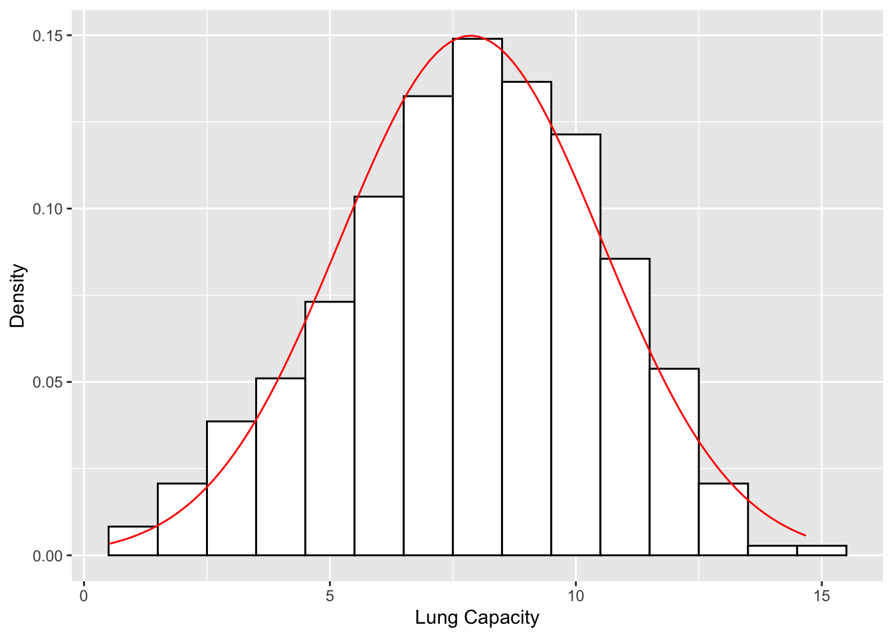
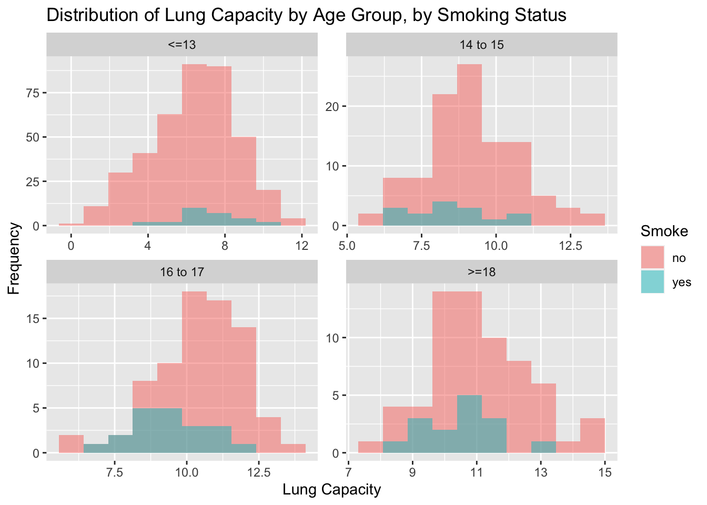

Code
library(dplyr)
library(ggplot2)
library(knitr)
library(kableExtra)Asch Harwood
February 28, 2023
#calc mean of lung cap
lc_mean <- mean(df$LungCap)
#calc sd
lc_sd <- sd(df$LungCap)
#use denorm to generate array of probabilities associated with each value of lung cap
df['probs'] <- dnorm(x=df$LungCap, mean=lc_mean, sd = lc_sd)
#plot histogram
ggplot(df, aes(x = LungCap)) +
geom_histogram(aes(y=..density..), binwidth=1, color="black", fill="white") +
stat_function(fun=dnorm, args=list(mean=lc_mean, sd=lc_sd), color="red") +
xlab("Lung Capacity") + ylab("Density")
Compare the probability distribution of the LungCap with respect to Males and Females?
Males have higher mean lung capacity, a slightly wider interquartile range, and a slightly higher standard deviation.
| Smoke | mean(LungCap) |
|---|---|
| no | 7.770188 |
| yes | 8.645454 |
The average lung capacity for non-smokers is 7.77 compared to 8.65 for smokers, which does not make sense. I would assume that smokers would have a lower average lung capacity than non-smokers. However, we can see that there is more variance in LungCapacity for non-smokers, which likely explains this finding.
| AgeGroup | mean(LungCap) |
|---|---|
| <=13 | 6.411932 |
| 14 to 15 | 9.045417 |
| 16 to 17 | 10.245876 |
| >=18 | 10.964688 |
There appears to be a relationship between age and lung capacity, where as age group increases, lung capacity increases as well. This is understandable given that developmentally a younger child would have a lower lung capacity than a young adult.

When controlling for age, average smoker lung capacity is lower across the board for all age groups except “13 <=”. In the later group, there are far fewer smokers, as one would (hope to) expect, which explains the slightly higher mean lung capacity for smokers.
Probability of exactly 2 convictions: 0.2
Probability of less than 2 convictions: 0.69
Probability of 2 or fewer convictions: 0.89
Probability of more than 2 convictions: 0.11
get_prob <- function(num_prisoners, total_prisoners) {
num_convictions <- prisoners$num_prisoners[prisoners$convictions== num_prisoners]
prob_convictions <- num_convictions/total_prisoners
return(prob_convictions)
}
prisoners$prob <- apply(prisoners, 1, function(x) get_prob(x['convictions'], 810))
expected_value <- sum(prisoners$convictions * prisoners$prob)Expected value of number of convictions for any random prisoners: 1.2864198
Standard deviation: 161.0838291
Variance: 2.5948^{4}
---
title: "Homework 1"
author: "Asch Harwood"
description: "Homework 1"
date: "02/28/2023"
format:
html:
toc: true
code-fold: true
code-copy: true
code-tools: true
categories:
- hw1
- desriptive statistics
- probability
---
```{r setup, include=FALSE}
knitr::opts_chunk$set(warning = FALSE, message = FALSE)
```
```{r}
library(dplyr)
library(ggplot2)
library(knitr)
library(kableExtra)
```
```{r, echo=T}
library(readxl)
df <- read_excel("_data/LungCapData.xls")
```
# Question 1
### a
```{r}
#calc mean of lung cap
lc_mean <- mean(df$LungCap)
#calc sd
lc_sd <- sd(df$LungCap)
#use denorm to generate array of probabilities associated with each value of lung cap
df['probs'] <- dnorm(x=df$LungCap, mean=lc_mean, sd = lc_sd)
#plot histogram
ggplot(df, aes(x = LungCap)) +
geom_histogram(aes(y=..density..), binwidth=1, color="black", fill="white") +
stat_function(fun=dnorm, args=list(mean=lc_mean, sd=lc_sd), color="red") +
xlab("Lung Capacity") + ylab("Density")
```
### b
Compare the probability distribution of the LungCap with respect to Males and Females?
```{r}
ggplot(df, aes(x = Gender, y = LungCap)) +
geom_boxplot()
```
Males have higher mean lung capacity, a slightly wider interquartile range, and a slightly higher standard deviation.
```{r, results='hide'}
IQR(df$LungCap[df$Gender=='male'])
IQR(df$LungCap[df$Gender=='female'])
sd(df$LungCap[df$Gender=='male'])
sd(df$LungCap[df$Gender=='female'])
```
### c
```{r}
mean_df <- df %>%
group_by(Smoke) %>%
summarise(mean(LungCap))
kable(mean_df, format='simple')
```
```{r}
ggplot(df, aes(x = Smoke, y = LungCap)) +
geom_boxplot()
```
The average lung capacity for non-smokers is 7.77 compared to 8.65 for smokers, which does not make sense. I would assume that smokers would have a lower average lung capacity than non-smokers. However, we can see that there is more variance in LungCapacity for non-smokers, which likely explains this finding.
## d
```{r}
df$AgeGroup <- cut(df$Age, breaks = c(0, 13, 15, 17, Inf),
labels = c("<=13", "14 to 15", "16 to 17", ">=18"))
```
```{r}
age_group_mean <- df %>%
group_by(AgeGroup) %>%
summarise(mean(LungCap))
kable(age_group_mean)
```
```{r}
ggplot(df, aes(x = AgeGroup, y = LungCap)) +
geom_boxplot()
```
There appears to be a relationship between age and lung capacity, where as age group increases, lung capacity increases as well. This is understandable given that developmentally a younger child would have a lower lung capacity than a young adult.
## e
```{r}
ggplot(df, aes(x = AgeGroup, y = LungCap, fill=Smoke)) +
geom_boxplot()
```
```{r}
ggplot(df, aes(x = LungCap, fill = Smoke)) +
geom_histogram(alpha = 0.5, bins = 10, position = "identity") +
facet_wrap(~AgeGroup, nrow = 2, scales = "free") +
labs(x = "Lung Capacity", y = "Frequency") +
ggtitle("Distribution of Lung Capacity by Age Group, by Smoking Status")
```
When controlling for age, average smoker lung capacity is lower across the board for all age groups except "13 <=". In the later group, there are far fewer smokers, as one would (hope to) expect, which explains the slightly higher mean lung capacity for smokers.
# Question 2
```{r}
#loading data into dataframe
prisoners <- data.frame(convictions = c(0, 1, 2, 3, 4), num_prisoners = c(128, 434, 160, 64, 24))
#calculating total prisoners
total_prisoners <- prisoners %>%
summarise(sum(num_prisoners)) %>%
as.numeric()
```
### a
```{r}
prob_2_convictions <- round(prisoners$num_prisoners[prisoners$convictions==2]/ total_prisoners,2)
```
Probability of exactly 2 convictions: `r prob_2_convictions`
### b
```{r}
sum_prisoner_lessthan_2 <- sum(prisoners$num_prisoners[prisoners$convictions<2])
prob_lessthan_2_convictions <- round(sum_prisoner_lessthan_2/total_prisoners, 2)
```
Probability of less than 2 convictions: `r prob_lessthan_2_convictions`
### c
```{r}
sum_prisoner_2_orless <- sum(prisoners$num_prisoners[prisoners$convictions<=2])
prob_2_orless_convictions <- round(sum_prisoner_2_orless/total_prisoners, 2)
```
Probability of 2 or fewer convictions: `r prob_2_orless_convictions`
### d
```{r}
sum_prisoner_morethan_2 <- sum(prisoners$num_prisoners[prisoners$convictions>2])
prob_morethan_2_convictions <- round(sum_prisoner_morethan_2/total_prisoners,2)
```
Probability of more than 2 convictions: `r prob_morethan_2_convictions`
### e
```{r}
get_prob <- function(num_prisoners, total_prisoners) {
num_convictions <- prisoners$num_prisoners[prisoners$convictions== num_prisoners]
prob_convictions <- num_convictions/total_prisoners
return(prob_convictions)
}
prisoners$prob <- apply(prisoners, 1, function(x) get_prob(x['convictions'], 810))
expected_value <- sum(prisoners$convictions * prisoners$prob)
```
Expected value of number of convictions for any random prisoners: `r expected_value`
### f
```{r}
std_convictions <-sd(prisoners$num_prisoners)
var_convictions <- var(prisoners$num_prisoners)
```
Standard deviation: `r std_convictions`
Variance: `r var_convictions`